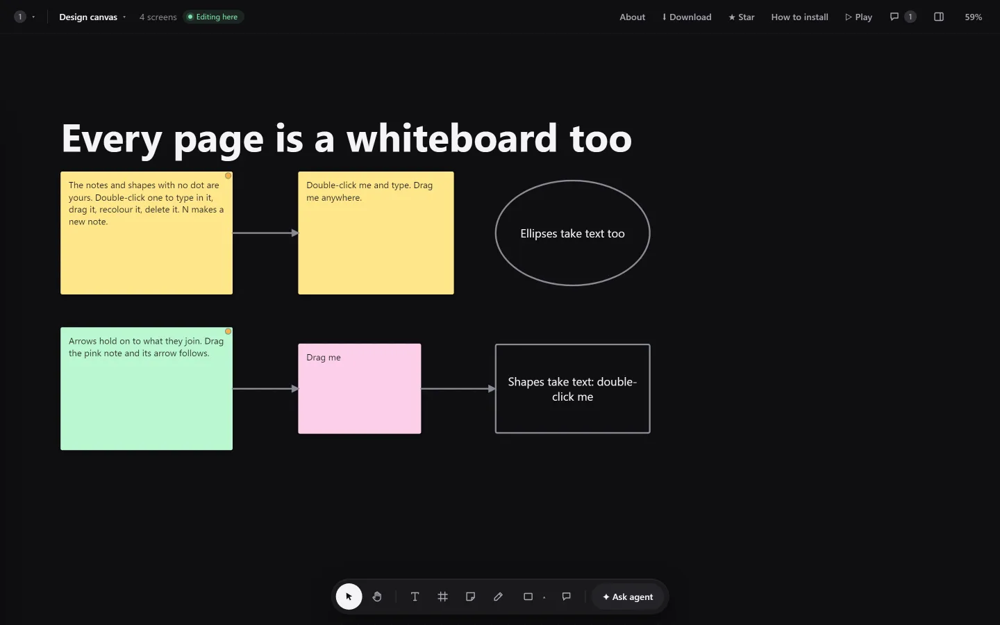

Design canvas
See all your HTML prototypes on one board, and edit them right there.
Prototypes are HTML now
Ask an agent for a design and you get a folder of .html files. Looking at them means a dozen browser tabs, and changing one word means going back to the chat and asking. This puts the whole folder in front of you at once, at real size, and lets you make the small changes yourself.
Click it, change it
Retype a headline, recolor a line, round a corner, drag a card into a new place. The change is written into that prototype's own file, and only the part you touched changes, so the diff stays small and readable.

Room to think around the screens
Sticky notes, shapes, sections and arrows that stay attached when things move. Pin a comment to a button and mark it for your AI agent. The agent reads it the next time it runs.

And a lot more
One click, one element
Click a line to select just that line. Alt-click to select every one like it.
Components
Make a card a component, duplicate it, and a style changed on one copy changes on all of them. The words in each stay their own.
Hover and pressed
Switch a button to Hover, see it hovered on the board, set its color, and choose how fast it fades.
Measure
Hold Alt over another element to see the space between them, in the prototype's own pixels.
Find and replace
Change a word everywhere on the page. Only the text changes. Code is left alone.
Undo anything
Board or prototype, Ctrl+Z takes back whatever you did last, one step at a time.
Groups, align, snap
Group notes, line them up, space them evenly, and watch them catch on each other's edges as you drag.
Any screen width
Click a screen's width to see it at phone, tablet or your own size, beside the others.
Motion
Give an element an entrance, stagger a row of cards, and scrub to any moment of it.
Flows and history
See where every link goes, and who changed what, newest first.
Phones and tablets
One finger moves the board, two zoom it, and a tap does what a click does.
Nothing leaves your machine
The canvas never goes online on its own, and only your computer can open it.
How it compares
What each tool can do, taken from its own website. If the website doesn't say, neither do we.
| Feature | Design canvas | Figma | FigJam | Claude Design | Claude artifacts | Canva |
|---|---|---|---|---|---|---|
| What you design in | Your own HTML files. Every change is saved straight into them. | Figma files. Working with code is in beta. | A board stored online by Figma. | HTML pages that Claude makes. You can download them. | A web page Claude writes for you. | Canva designs. You can bring in HTML with Canva Code. |
| Edit it yourself | Click anything to change its text, style, size or place. | Yes | Only the things on the board. | You can edit text, move things and use sliders Claude adds. | No. You ask Claude to change it. | Yes |
| Colors and effects | Gradients, mesh gradients, shadows, blur, blending and rotation. | Yes. Mesh gradients need a plugin. | Colors only. | Sliders for spacing and color. | No | Yes |
| Whiteboard | Sticky notes, shapes, sections, drawing, stamps, templates and arrows that stay connected. | Only in FigJam. | Sticky notes, shapes, arrows, stamps and templates. | Only in Claude Whiteboards, a separate beta on paid plans. | No | Yes, with sticky notes. |
| Comments | Pin a comment to any element. Reply, react and @mention people. | Yes | Yes | Yes | Yes | Yes |
| AI acts on comments | Your own AI agent reads the comments and changes the files. | Figma's AI, or coding agents connected to Figma. | Coding agents connected to Figma. | Claude, right in the design. | Claude | Canva AI, when you ask it. |
| Click through it | Yes. Play mode runs your real pages, links and all. | Yes | No | Yes | Yes. It's a real web page. | Only sites and apps made with Canva Code. |
| Undo and history | See every change and who made it. Undo works across everything. | Yes | Yes | Not mentioned in its docs. | Each time you publish, a version is saved. | On paid plans. |
| Work together live | Yes, and you see each other's cursors. People you invite edit live while your canvas is running. | Yes, and you see each other's cursors. | Yes, and you see each other's cursors. | Basic sharing inside your company. | Others can view. Team plans can edit. | Yes |
| Where your work is kept | On your computer. No account, and nothing is sent anywhere unless you set up a room to work with others. | Online, and you need an account. | Online, and you need an account. | Online, and you need an account. | Online, and you need an account. | Online, and you need an account. |
| Export | One HTML file that opens anywhere. Save any element as a PNG or any screen as a PDF. | PNG, SVG and PDF. | PNG and PDF. | PDF, PowerPoint, HTML, Canva, or send it to Claude Code. | Just a link. | PNG, PDF, video and more. |
| Price | Free and open source. | Free to start, then you pay per person. | Free to start, then you pay per person. | Included with every Claude plan, even Free. | Included with Claude plans. | Free to start, then paid. |
YesPartlyNo
Get it
Paste this into your agent. The link has everything it needs. It installs the canvas and opens your prototypes, or walks you through the steps.
Install the design canvas in this project and open my prototypes on it: https://ryanallen.com/design-canvas/install/
Or do it by hand
It needs Node. There is nothing else to install, no build step and no account.
- Put it in your projectAs a skill, in the folder your agent reads skills from:
git clone https://github.com/ryanallen/design-canvas .agents/skills/design-canvas
- Open a folder of prototypesDouble-click Design Canvas.cmd on Windows or Design Canvas.command on a Mac and pick the folder. Or from a terminal:
node .agents/skills/design-canvas/scripts/canvas.mjs serve <folder>
A canvas you build is one .html file. Send it to anyone and it opens on their computer. In Chrome or Edge they can edit it and comment too.